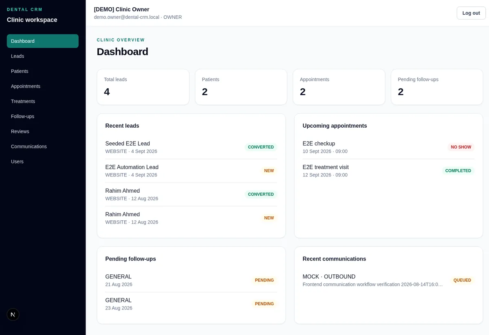

A
Full-Stack Development
Typed interfaces, APIs, and data layers for production web apps.
- React
- Next.js
- TypeScript
- JavaScript
- Node.js
- NestJS
- Express
- FastAPI
- PostgreSQL
- MongoDB
- Redis
- Tailwind CSS
Full-Stack Developer AI/ML Engineer
Building intelligent digital experiences through engineering & AI.
I build production web applications end to end — React and Next.js interfaces, NestJS, Express and FastAPI backends, PostgreSQL and MongoDB data layers — and add practical AI where it genuinely helps: retrieval-augmented generation, agents, and LLM-powered workflows.
Full-Stack Developer · Infinitontech
01 About
I’m a final-year Computer Science & Engineering student at Shahjalal University of Science and Technology (SUST) and a full-stack developer at Infinitontech, a software agency. I enjoy owning a product end to end — from the first schema migration to the last pixel — and I’m currently working on the backend of a multi-tenant retail ERP.
Alongside product engineering, I study and build AI systems: machine learning and deep learning models, retrieval pipelines, agent workflows with LangChain and LangGraph, NLP, and computer vision. I’m especially interested in reliable language models and Bengali NLP. I approach these areas as an active learner and builder — not as a claim of mastery.
02 Experience
Backend and platform work on real client systems, built on an earlier foundation in software and applied AI.
Software agency · client product engineering
Client project TrustCart — multi-tenant retail ERP Dec 2025 — Present
Backend & platform engineering
Software & applied AI engineering
03 Skills
No percentages or ratings — just the technologies I use across real projects.
A
Typed interfaces, APIs, and data layers for production web apps.
B
Classical ML through deep learning for language and vision.
C
Grounded LLM applications, retrieval pipelines, and tool-using agents.
D
Shipping, hosting, automating, and keeping systems healthy.
04 Projects

A full-stack food delivery platform for customers, restaurant owners, delivery partners, and administrators — with database-grounded food recommendations and real-time updates.
Food ordering usually splits menu discovery, restaurant operations, delivery coordination, and administration into disconnected tools.
A local-first, multimodal RAG application for chatting with PDF documents, with cited answers across text, images, and tables behind a FastAPI and React interface.
Dense retrieval alone can miss lexical matches, broader parent context, and the visual or tabular information inside PDFs.
A TypeScript MERN coaching-management and online-learning platform for classes 6–12 and admission candidates, with dashboards for every role.
Coaching centres juggle courses, batches, classes, exams, results, guardians, and payments across separate tools.

Real screenshot · seeded demo data
A CRM for the dental patient journey — lead inquiry, qualification, appointment, treatment, review, follow-up, and retention — with role-based access and LLM lead analysis.
Clinics lose track of leads and patients when inquiries, appointments, treatments, and follow-ups live in different places.
Full-stack · E-commerce
A mobile-first Bangla e-commerce store with cart, checkout (COD, bKash, Nagad, WhatsApp fallback), and an admin dashboard for products, settings, and order status — with server-side price, delivery-fee, and stock validation.
Frontend · Product demo
An interactive client-facing demo of a Facebook Page automation workspace — operations dashboard, Messenger-style inbox with human takeover, order pipeline with CSV export, reply rules, FAQs, and safety controls.
RAG · Multimodal
A modular pipeline that extracts text and images from PDFs, embeds both with CLIP, retrieves relevant context through FAISS, and uses Gemini for multimodal answer generation.
RAG · NLP
A Streamlit application that retrieves from cached video transcripts and supports contextual follow-up questions with conversational memory.
Applied ML · API
A web application that serves a trained diabetes-risk model through a typed FastAPI backend and a Streamlit patient-input interface.
ML analysis
An end-to-end telecom churn study covering EDA, preprocessing, feature engineering, six-model comparison, ROC/AUC analysis, and feature importance.
05 Research
Research interests, ongoing work, and competitions are listed separately. I have no published papers yet — nothing below is presented as one.
Language technology for Bengali, including low-resource and dialect challenges.
Reliability, hallucination detection, and grounded generation.
Hybrid and adaptive retrieval, reranking, and RAG evaluation.
How LLM and agent systems fail under adversarial input — and lightweight defenses.
Robust modelling and evaluation on real, imbalanced data.
Detection and multimodal understanding, including document and traffic imagery.
AI for healthcare and biology — the direction of my thesis work.
Bengali Health-Advisory RAG with a Hallucination-Safety Layer
Citation-grounded Bengali public-health advisory using curated knowledge bases, retrieval-grounded generation, and post-hoc answer verification.
AdaptiveRAG-Agent
LLM-guided retrieval decisions, tool use, and query routing to improve efficiency and answer quality over static RAG pipelines.
Bengali Hallucination Detection Kaggle
0.803 competition score with an ensemble of fine-tuned BanglaBERT-large, a Qwen3-14B LLM-as-judge, dense retrieval, and LightGBM meta-stacking.
bKash / NSUCEC Datathon
Churn-prediction pipeline on a 75M+ row transactional dataset with Dask, LightGBM, XGBoost, CatBoost, and Optuna.
Vehicle Detection on Bangladeshi CCTV Kaggle
YOLO11 detectors on a 13-class dataset with tiny objects and severe class imbalance.
06 Education
Shahjalal University of Science and Technology (SUST) · Sylhet
Final-year student. Thesis direction: Bengali health-advisory RAG with a hallucination-safety layer.
07 Contact
I’m open to full-stack and backend roles, freelance web projects, AI/ML engineering, and research collaborations — remote or on-site.